Analyser et améliorer l’expérience utilisateur d’une fonctionnalité.
Rethinking UX est un workshop qui a comme objectif d’observer les fonctionnalités d’un service et de proposer ainsi
qu’argumenter une proposition d’amélioration.
Notre choix
Cette année, pour le workshop Rethinking UX, nous avons eu le choix entre cinq services.
Medium
Pinterest
UberEats
WhatsApp
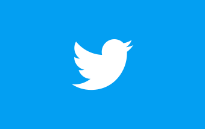
Twitter
Après beaucoup de réflexion et d’hésitation quant au choix du service sur lequel nous allions Travaillé, notre choix
s’est porté sur Twitter. Ce qui était intéressant, c’était que la moitié du groupe n’utilisait pas du tout ce service,
ce qui allait nous permettre d’avoir une analyse plus intéressante.
Pour nous, il s’agit d’un réseau social permettant de s’informer, communiquer, partager et promouvoir rapidement des
idées entre utilisateurs au moyen de messages, dits Tweet, composé de 280 caractères.
Fonctionnalités
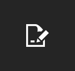
Inscription
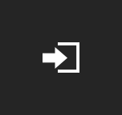
Connexion
Déconnexion
Tweet
Message
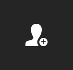
Abonnement
Éditer profil
Liste
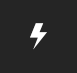
Moments
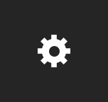
Paramètres
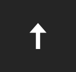
Retour haut
Tendances
Mode nuit
Recherche
Notre utilisation
Nous avons listé la manière dont chacun d’entre nous utilisait Twitter afin de voir quelles sont les fonctionnalités
les plus importantes et donc probablement les plus utilisées.
Suivre des personnes dans des domaines qui nous intéressent;
inspiration (art, design et web);
partage et mise en avant de proposition de jobs (freelance);
promotion et visibilité;
contacté des marques (dm);
développement d’une communauté.
Démarche
J’ai choisi de travailler sur une des fonctionnalités principales de Twitter, l’abonnement. Elle permet de suivre un
autre utilisateur sur la plate-forme et d’être notifié lorsqu’il tweet ou retweet quelque chose. Cette
fonctionnalité est simple et pourtant, elle pourrait avoir une meilleure expérience.
Le problème
Lorsqu’on suit une personne sur Twitter, c’est bien entendu, car son contenu nous intéresse. Le problème là-dedans
c’est qu’on s’abonne rarement à une personne pour tout son contenu, il est fréquent qu’une partie de ses tweets ne nous
intéresse pas et il arrive que la partie qui ne nous intéresse pas soit la plus favorisée.
Il est possible d'indiquer lorsqu'un tweet ne nous intéresse pas, de cette manière, Twitter va en prendre compte et sur
base des tweets indiqués comme telle, l’algorithme va essayer d'améliorer notre fil en éliminant ce type de contenu.
Il est impossible de revenir sur cette décision par la suite.
C’est un problème que je rencontre personnellement et après en avoir discuté avec d’autres personnes, je me suis
rendu compte que c’était vraiment un problème récurent chez les utilisateurs de Twitter.
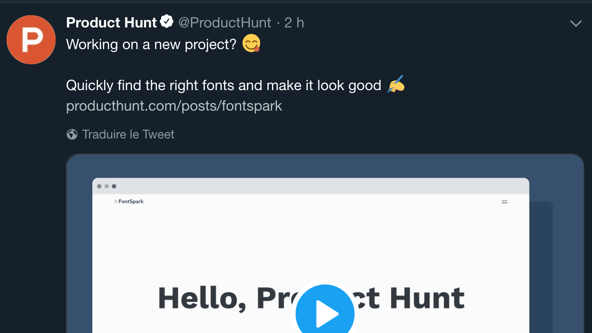
Exemple de tweet que l’on ne souhaite plus voir.
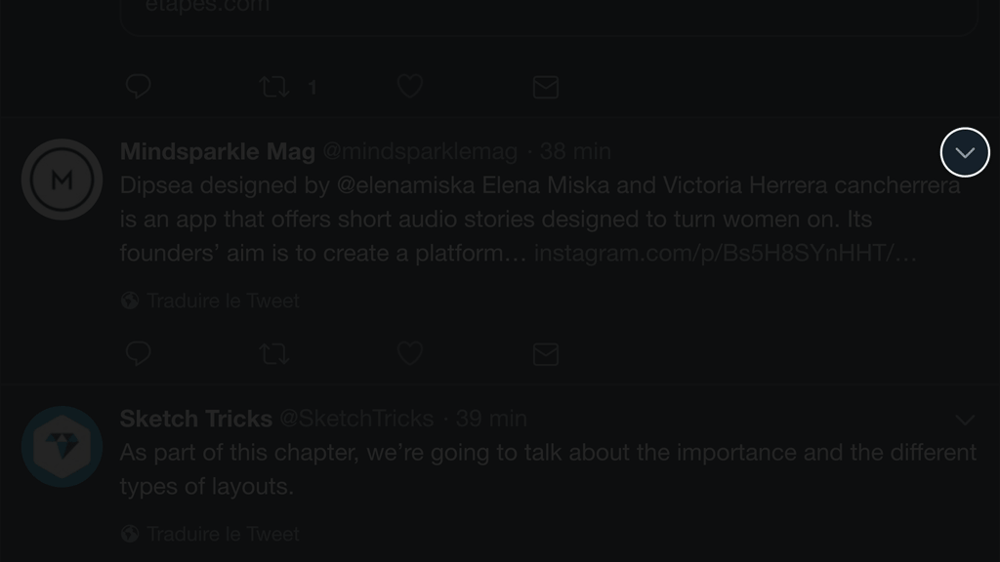
Menu présent en haut à gauche d’un tweet.
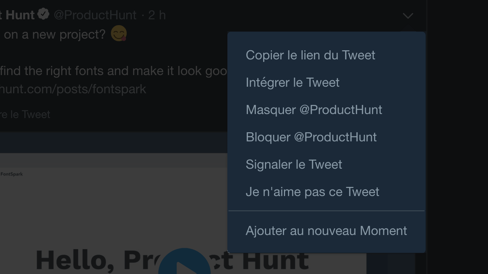
Bouton qui sert à indiquer lorsqu’un tweet ne nous intéresse pas.
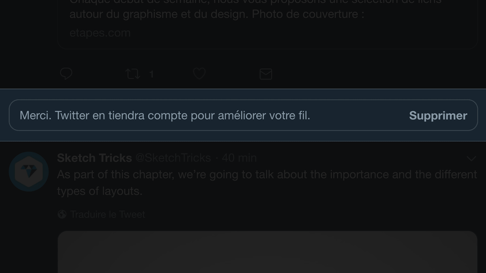
Message de confirmation une fois l’action effectuée.
User Testing
Le scénario de ce test est de :
rechercher un compte;
s'abonner à ce compte;
se rendre sur le fil d’actualité;
indiquer un tweet indésirable.
Le test m’a permis de me rendre compte que le processus était vraiment fastidieux et s’il faut faire ça pour chaque
tweet indésirable, c’est vraiment long. En plus, une fois la page rafraîchie le tweet précédemment indiqué est de
nouveau proposé et le fil n’est d’aucune manière amélioré. En d'autres mots, ce bouton se trouve au mauvais endroit, au mauvais moment.
C’est durant cette phase du projet que j’ai cherché à trouver une bonne solution, qui permettrait de vraiment avoir du
contenu qui nous intéresse. Pour ce faire, j’ai d’abord analysé quelques services qui ressemblaient à Twitter et qui
proposaient des fonctionnalités similaires.
Comparatif
Pinterest
Avantages
Follow des thématiques précises;
suggestion du contenu.
Inconvénients
Gestion abonnements difficiles.
Instagram
Avantages
Follow des hashtags;
gestion des abonnements faciles.
Inconvénients
Hashtags utilisés pas toujours en rapport avec l’image.
LinkedIn
Avantages
Follow des hashtags.
Inconvénients
Hashtags peu utilisés;
hashtags pas mis en avant;
hashtags suivis automatiquement, sans notre accord.
De manière générale, chaque service propose une façon de gérer plus précisément ses abonnements et donc d’avoir un
contenu plus ou moins adapté à nos intérêts.
Ma première piste était de pouvoir s’abonner à des hashtags, mais ce n’est peut-être pas la meilleure solution, cela ne
résout pas vraiment le problème et une application comme TweeDeck ou TweetBot permettant déjà de le faire.
J’ai donc pensé à modifier légèrement le processus d’abonnement, au moment de s’abonner, il est possible de voir tous
les types de contenu que propose l’utilisateur et de pouvoir s’abonner ou non à ceux-ci (donnant ainsi plus de contrôle à l'utilisateur).
Dans le cas où l’utilisateur change d’avis, il est possible de modifier le contenu auquel il est abonné via une fenêtre similaire.
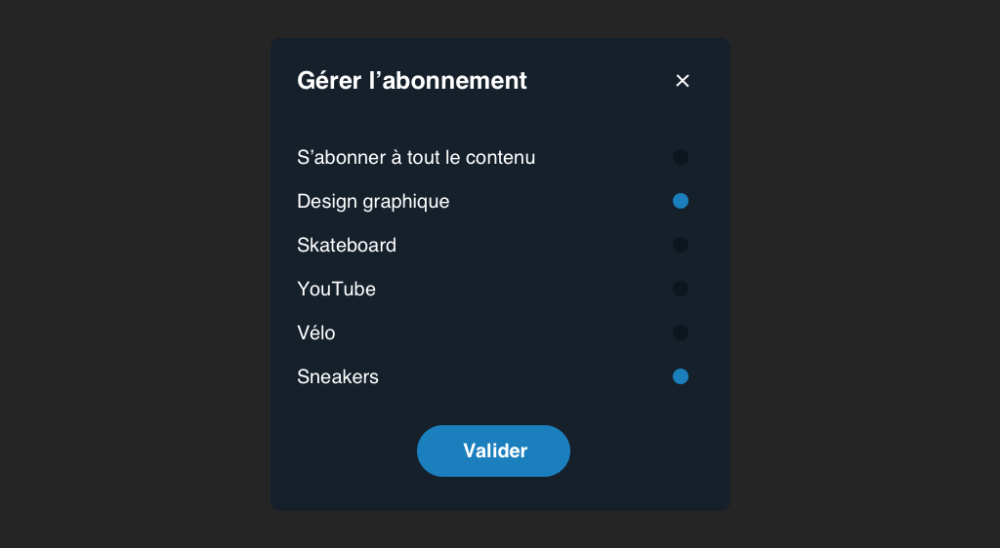
Prototype
Après avoir trouvé le problème à régler, il me fallait trouver un moyen de bien la réaliser et de proposer une solution
intuitive. Les retours suite au différent test du prototype m’ont permis de bien peaufiner l’expérience et de proposer
la version la plus optimale possible.
L’objectif du prototype est :
se rendre sur le profil d’un autre utilisateur via la recherche;
s’abonner à deux de ses sous-abonnements;
retourner sur la page d’accueil;
s’abonner à une autre personne depuis le fil d'actualité;